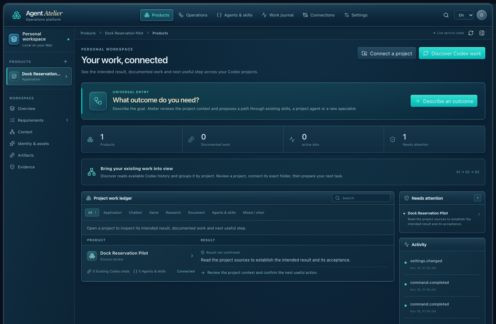

AI TEAM · BUILT FOR CODEX
One goal. A complete way to deliver.
Plan the work. Bring in the right specialists. Check the result. Pick up where you left off — with sources, decisions and recovery in one local toolkit.
Commercial release candidate. No payment is collected here. Remaining legal seller facts, support hours and public sales approval are still required.
Open your buyer packageRead the full product guide
Get to your first useful result
- Receive the correct archive, purchase document and trusted signature receipt. Verify and stage the package.
- Open START_HERE.html. Run Start.command; the local setup checks Python and Codex, shows components and target folders, and reports conflicts.
- Review the audit, then install the exact plan. Keep the journal. Refresh Codex and verify the actual skill and role paths.
- Copy examples/first-task to a disposable folder. Ask the installed Orchestrator to fix the heading and preserve notes.txt. Verify both files.
Installation and recovery · License & support
One connected toolkit
Clarify & decide
Workshop, brief, PRFAQ and 18 editable templates; keep open decisions and reviews tied to their exact sources.
Design & build
Source-bound UX walkthroughs, product and architecture contracts, App/ChatBot/Game families and two reusable constructors.
Coordinate & recover
Separate Git worktrees, scope, checkpoints and known update journals. Reconcile unknown provider effects.
Check & hand off
Independent reviewer assignments, candidate evidence and exact next action for the next person.
One-time purchase. Your acquired major stays yours.
Draft offer in USD. Same major updates included. Next major is a separate offer. Buyer uses their own model and API accounts.
Solo
$49
One named user · multiple personal devices
Personal and client commercial projects
Team
$149
Up to five named users · one organization
Personal and client commercial projects
Before you start
Is a Codex subscription included?
No. Use your own supported Codex account. Model usage, APIs, hosting and other services may have separate fees.
What runs locally?
33 core skills, Orchestrator, profile and roles. The Mac workbench is a separate prebuilt runtime candidate; no npm/TypeScript build is required by the buyer.
What is actually supported?
The RC is exercised on the named local environment. Intel/M1 hardware, Linux and notarization have separate acceptance records. See system requirements and the RC report before buying.
Can I use outputs commercially?
Yes, under the edition and lawful source rights. Original toolkit resources copied into generated agents retain their terms. The whole package is not granted for resale.
What happens if the store is offline?
Keep your acquired version, license document, package and backups. An unavailable store does not disable local rights or modify your projects.
How do I get help or a refund?
The owner-provided support/privacy contact is Oleksandr Hohaizel: aleksandrhohaizel@gmail.com. Documentation and reproducible package bug help are included; no response SLA is promised. The working channel, support hours, remaining seller facts and refund terms must be confirmed before sale.
Verification and recovery
Keep the original package and the exact setup journal. Verify the source and read back unknown outcomes before retrying.

Original product illustration. Actual installation and task evidence are delivered with the candidate report.
See the actual candidate
Real workbench screenshots with isolated test data. The video records actual setup, discovery and the first task in a labeled test viewer; the viewer is demonstration instrumentation, not the product interface.
